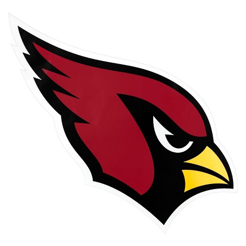
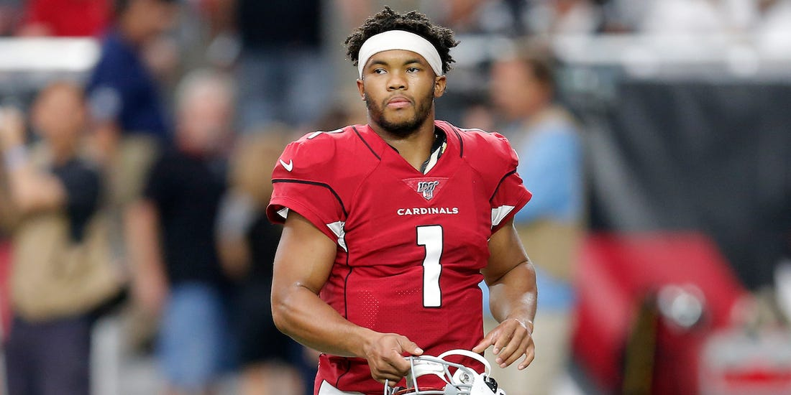
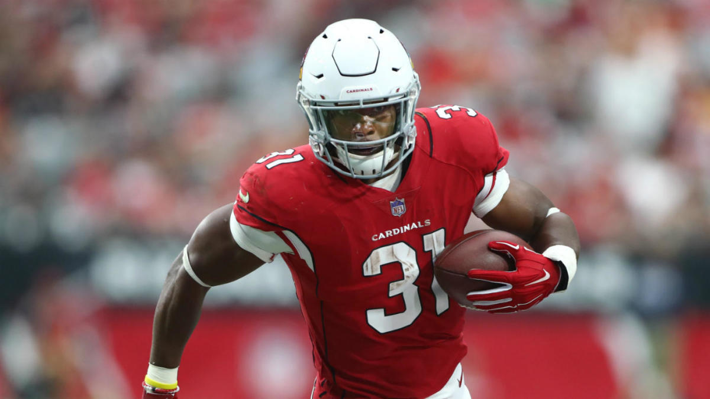

Kyler Murray is the rookie starting quarterback, he was the first overall pick in the 2019 NFL draft. He was also drafted ninth overall by the Oakland A's in the 2018 MLB draft, but chose to continue playing football. He won the Heisman trophy his junior year of college while playing for Oklahoma. He is a dual threat quarterback because he can throw accurately inside the pocket, but he is also incredibly fast so he can run if he needs to.
Kyler Murray
David Johnson is the Cardinals running back. He is a dynamic back that can play all three downs, however he has had trouble with his health in recent years. When healthy, Johnson is one of the top backs in league, and broke and NFL record in 2016 for the most consecutive games with 100+ yards from scrimmage.
David Johnson
Larry Fitzgerald is the longest tenured Cardinal on the roster. Entering his 16th season, Fitzgerald has solidified himself as a first-ballot hall of famer when he retires and becomes eligible. Even though he's 36, he is still Kyler Murray's go-to target in crucial situations.